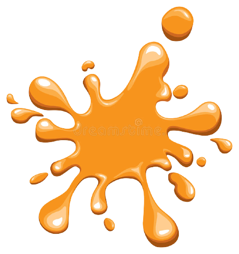
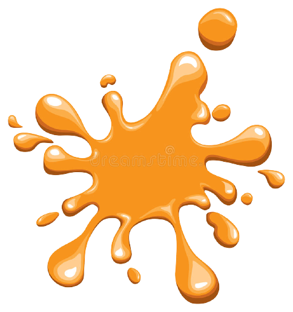
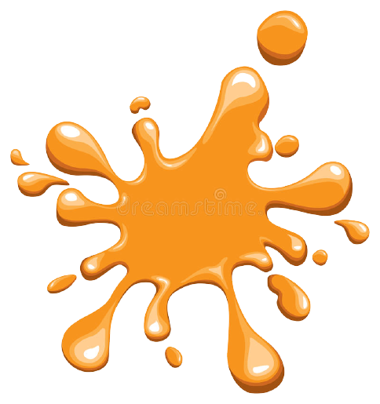

Desde que era pequena, desenhava, pintava e me interessava por este lado da arte. Agora, já adulta, minhas técnicas evoluíram e consigo abranger cada vez mais a minha criatividade e interligá-la com o mundo ao redor.
Existem várias técnicas e informações do nosso lado direito do cérebro que colaboram com todo esse senso artístico, que ajuda a ativar ou aumentar a criatividade, precisão e perfeição (até porque toda arte é PERFEITA)!
